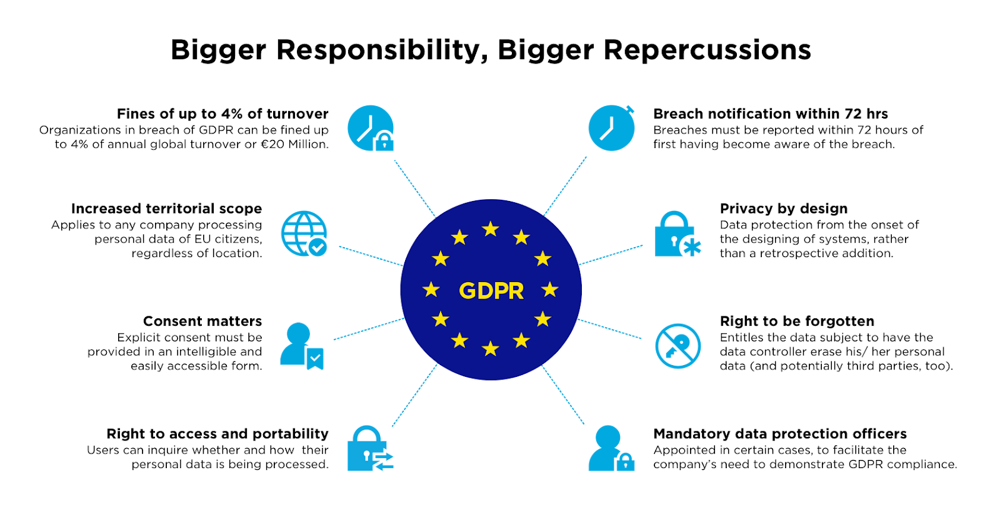

What is this Policy About?
What is Digital Protection Policy About?
The Digital World is Here to Stay
In todays world, digital technology has cemented itself in daily life, influencing how we communicate, work, and access information. This shift towards the digital realm comes with risks, as more and more personal and private information is stored online. The European Union (EU) has recognized this threat and the importance of safeguarding personal data in this new age, which has led to the development of policy such as the General Data Protection Regulation (GDPR) in 2018. This regulation looks to protect individuals’ privacy and data, focusing on regulating the handling of personal data by organizations.

The Growth of Digital Usage
The world has seen a rapid adoption of digital technology over the past two decades, and Europe is no different. These digital technologies are attached to every aspect of life for individuals and have become increasingly widespread. According to Eurostat, the percentage of EU households with internet access rose from 70% in 2010 to 90% in 2023, showing that digital tools are being rapidly integrated into everyday activities. Despite its many benefits, this adoption underscores the necessity for data protection measures, such as the GDPR, to aid in the safeguarding of personal information as Europe continues to become a digital society. The chart below shows the dramatic increase in internet usage since 2007 to 2017,
This chart illustrates the rising percentage of individuals in the EU who use the internet on a daily basis from 2007 to 2017. As access and reliance on online services continue to grow, it becomes evident that the internet is now a central part of everyday life. Recognizing this persistent trend underscores the importance of strong digital protection policies for EU residents.
The Digital Skill Gap
Despite the digital world expanding its influence, not all who use the internet have the skills needed to fully navigate or protect themselves in this complex environment. While internet usage has surged across Europe, a significant portion of the population still lack basic digital skills, which would allow them to use software, understanding online privacy settings, and recognize security risks.
This discrepancy has created a digital skill gap, in which some individuals are well-equipped to thrive in a data-driven societym while others lack these skills and remain vulnerable to the misuse of their personal data and cannot exercise their digital rights. Eurostat data shows that in 2022, less than 60% of individuals in certain EU member states possed basic or above-basic digital skills, which shows the regional disparities in digital skill.
The GDPR, and policy like it, seek to address this gap by ensuring universal data protection, regardless of an individual’s digital proficiency. These policies aid those with minimal digital literacy in the fight to maintain control over their personal data by leveling the playing field in an increasingly challenging digital ecosystem.
Why GDPR is Necessary
In an era where personal data is collected, stored, and analyzed at unprecedented levels, privacy has become a critical concern, not only for individuals but for governments. From social media to online shopping and healthcare platforms, individuals share vast amounts of personal data, and despite the frequency of using these digital platforms, many remain uninformed. This growing dependence on digital technologies increases the risks of data breaches and the misuse of sensitive information.
The General Data Protection Regulation (GDPR) was created to address these risks by placing individuals’ rights at the center of data protection. It ensures that people retain control over their personal information and that organizations are held accountable for protecting it. Key components sof the GDPR are its mandates for clear consent of data processing, the right to access and delete personal data, and strict penalties for organizations held in non-compliance.
GDPR is especially important for protecting vulnerable populations, particularly those with limited digital skills, due to social or economic contraints. By setting a universal standard for data protection, GDPR and policy like it create a safety net for all EU citizens in this digital era.

Sources:
European Commission. “Data Protection in the EU.” Accessed November 20, 2024. https://ec.europa.eu/info/law/law-topic/data-protection_en.
Eurostat. “Digital Economy and Society Statistics - Households and Individuals.” Accessed November 20, 2024. https://ec.europa.eu/eurostat/statistics-explained/index.php/Digital_economy_and_society_statistics_-_households_and_individuals.
Eurostat. “Individuals Who Have Basic or Above Basic Overall Digital Skills by Sex.” Accessed November 20, 2024. https://ec.europa.eu/eurostat.
Eurostat. “Individuals - Frequency of Computer Use.” Accessed November 20, 2024. https://ec.europa.eu/eurostat.
GDPR.eu. “What is GDPR? The EU’s General Data Protection Regulation Explained.” Accessed November 20, 2024. https://gdpr.eu/what-is-gdpr/.
DLA Piper. “GDPR Data Breach Survey 2023.” Accessed November 20, 2024. https://www.dlapiper.com.
GitHub. “GDPR Fines Dataset (2018 - 2021).” Accessed November 20, 2024. https://github.com/sandykramb/GDPR-fines-Dataset/blob/main/GDPR%20Dataset.csv.
Emotiv. “GDPR - General Data Protection Regulation Glossary.” Accessed November 20, 2024. https://www.emotiv.com/blogs/glossary/gdpr.Sources:
- Eurostat. “Digital economy and society statistics - households and individuals.” Accessed November 20, 2024. https://ec.europa.eu/eurostat/statistics-explained/index.php/Digital_economy_and_society_statistics_-_households_and_individuals